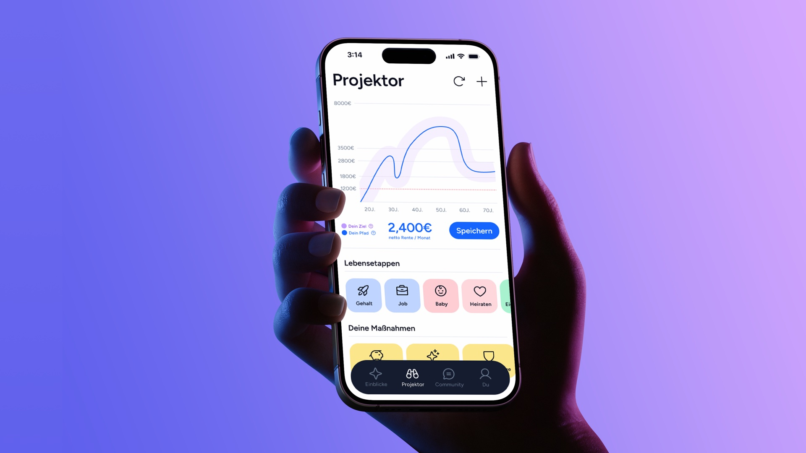
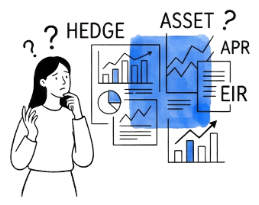
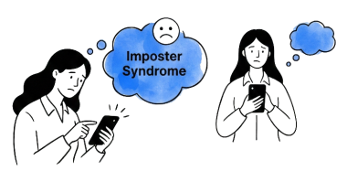
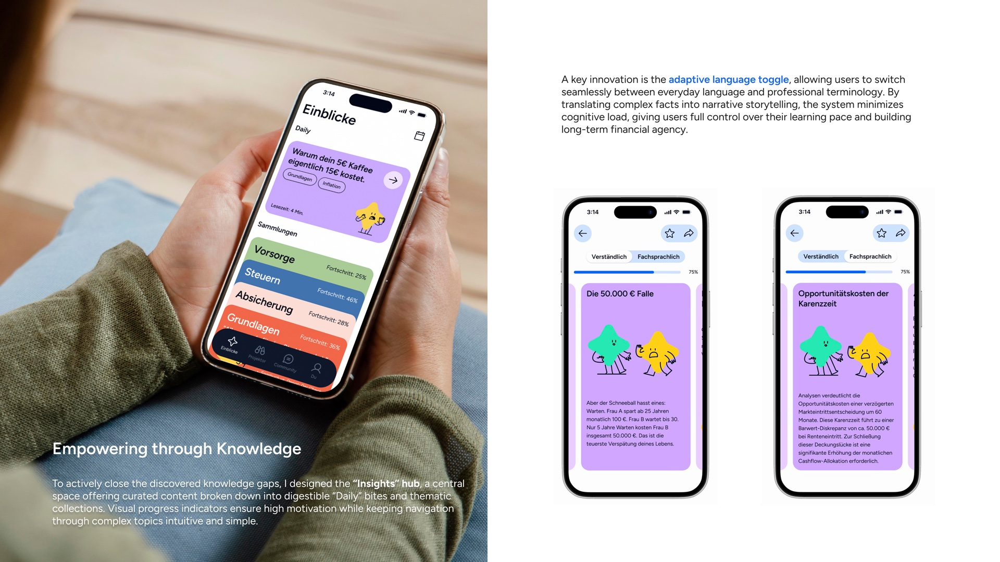
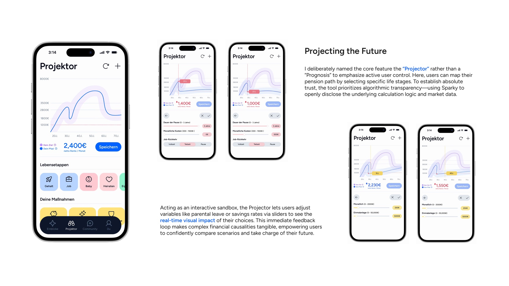
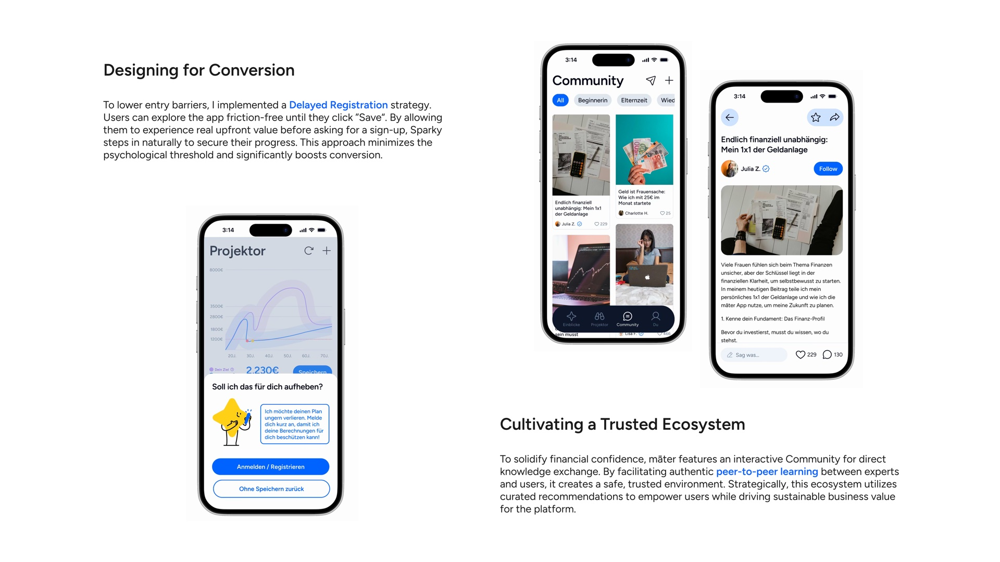
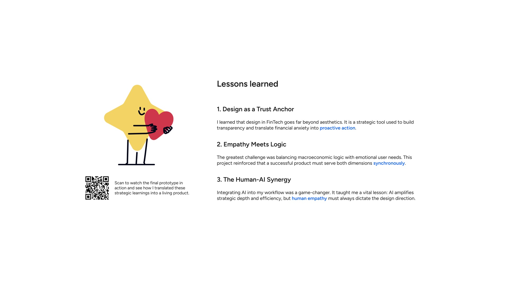

māter
Financial clarity. Built for confidence.
Overview
A master project exploring the intersection of behavioral design and economic modeling to transform women's financial anxiety into confident action.
Reframing the Challenge
Structural realities in Germany—like the 18% gender pay gap and a 46% part-time work rate—result in a 49% average pension deficit for women. Driven by unpaid care work and systemic opacity, this leaves women highly vulnerable to old-age poverty.
While a digital product cannot fix these socio-economic structures overnight, it can solve the immediate hurdle. I focused the strategy on the "Psychological Gap". By targeting a 50% knowledge deficit and a 38% trust gap, the goal is to replace "Financial Imposter Syndrome" with actionable clarity and confidence.
Scan to watch the manifesto—uncovering the systemic financial anxiety women face, and the vision behind my solution.
The Structural Gap
The Psychological Gap

Knowledge Void
Trust Barrier


Uncovering the Trust Gap
I conducted 6 in-depth interviews with a diverse, logic-driven user group—ranging from economics students to a financial columnist—to observe their financial decision-making and evaluate how current tools meet their demand for professional precision.
Despite high proficiency in their own fields, users found current financial tools "exclusive" and "exhausting". The real barrier isn't a lack of intelligence, but a profound trust gap caused by systems prioritizing complexity over user clarity.

I clustered the raw user feedback to identify their underlying behavioral barriers. This process helped me turn messy, emotional data into a concrete set of "Design Dos and Don'ts".

To keep the research human-centered, I created profiles like Lena. Visualizing their "psychological reality" ensured that real user fears and motivations drove my design decisions.

I reframed user hurdles into targeted HMW questions. This focused my brainstorming on a single, clear goal: designing features that directly bridge the psychological gap I discovered.

Using the SCAMPER method, I narrowed down early ideas into three main journeys. This helped me map out the complete interaction, ensuring a smooth and reassuring experience for the users.

Building the Visual Foundation
Inspired by the Latin word for "mother", māter provides a supportive foundation for financial independence. The geometric logo's ascending lines symbolize the continuous growth of knowledge and trust.
To make complex data approachable, I paired the highly legible Figtree typeface with a strategic color palette. Avoiding gender clichés, I used a de-escalating Blue to calm anxiety and Digital Purple for a modern tech feel—all structured on Tailwind CSS v4 for seamless handoff.
To bridge the emotional trust gap, I introduced Sparky. As the app's digital mentor, this character makes complex topics accessible through friendly, non-judgmental dialogue.

Structuring the User Experience
I designed the Information Architecture to translate complex financial topics into a flat, intuitive hierarchy. Building on this backbone, the User Flow maps out flexible interaction paths—like seamless language switching—ensuring the overall logic remains frictionless for every user.

Iterating from Concept to Reality
The design evolved iteratively. Early wireframes and Lo-Fi prototypes allowed me to validate core click-paths and logic without visual distractions. After integrating the brand system into a Hi-Fi prototype, I closed the loop with direct user testing to guarantee the experience met real user needs.
Before

Refining for Transparency
During testing, users felt skeptical about the "black box" nature of financial projections, often questioning where the numbers came from. This friction point highlighted a critical gap between professional data and user trust.
As a key example of the post-testing refinement, I introduced contextual slide-up overlays to disclose underlying calculation parameters. This specific change significantly boosted perceived validity and empowered users to interact with the simulation with newfound confidence.
After


This is followed by a Sparky-guided onboarding that captures three core parameters: birth year, life situation, and profession. These inputs enable a precise algorithmic calibration of the user's personal starting point, replacing uncertainty with immediate clarity and a sense of ownership over their financial future.
Lowering the Barrier to Action
To reduce the psychological threshold immediately, I introduced an optional Guest Mode, allowing users to explore the app without mandatory registration, building trust from the very first second.






You may also like